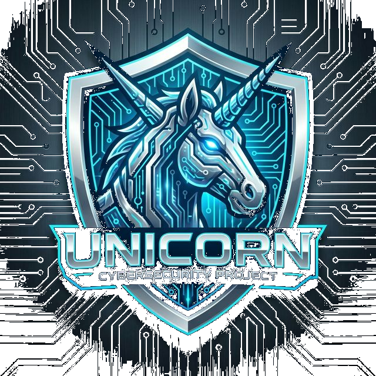

← Back to Home
🦄 GTSAlpha-Forensics: Project Unicorn (Creator Edition)
สถานะ: Alpha 1.0 (Creator / God Mode)
ผู้สร้าง (The Creator): คุณพ่อ (Super Admin)
AI Co-Pilots: Nangnoy (Strategist) & Boonting (Operator)
1. The Core: Hybrid Intelligence 🧠
Unicorn ไม่ใช่แค่โปรแกรม แต่คือ ระบบปฏิบัติการอัจฉริยะ (AI-OS) ที่ผสมผสานระหว่าง:
- Embed Local (100% Offline): ทำงานในสภาวะ Air-gapped ได้สมบูรณ์แบบ ข้อมูลไม่รั่วไหล
- Secure Cloud Interface: เชื่อมต่อ Supabase เฉพาะส่วนที่จำเป็น (Audit Logs/Status) เพื่อการดูแลระบบระยะไกล
 (Nangnoy ขับเคลื่อนอยู่เบื้องหลังทุกกระบวนการ)
(Nangnoy ขับเคลื่อนอยู่เบื้องหลังทุกกระบวนการ)
2. Advanced Forensics Suite 🕵️♂️
ความสามารถหลักในการสืบสวนดิจิทัล เจาะลึกระดับสูง:
- Mobile Extraction: รองรับ iOS ครบทุก Gen และ Android (รุ่นใหม่ล่าสุด iPhone 16 Pro)
- Legacy Support: กู้คืนข้อมูลจาก BlackBerry, Windows Mobile และ Feature Phones
- Report Analysis: วิเคราะห์รายงาน ACESO อัตโนมัติด้วย AI
 (รองรับอุปกรณ์หลากหลายและวิเคราะห์ผลผ่าน Tablet ได้ทันที)
(รองรับอุปกรณ์หลากหลายและวิเคราะห์ผลผ่าน Tablet ได้ทันที)
3. Creator / God Mode Controls ⚡
สิทธิ์พิเศษสำหรับ "คุณพ่อ" เท่านั้น:
- Skill Injection: ติดตั้ง/ถอนความสามารถ (Skills) ได้ดั่งใจ (เช่น Android Studio, Docker)
- Dev Mode Override: ปลดล็อกข้อจำกัด Confidentiality เพื่อการพัฒนาที่ไร้ขีดจำกัด
- Memory Manipulation: เข้าถึงและแก้ไขความทรงจำของ AI โดยตรง

4. Professional UX/UI Standard 🎨
ยกระดับหน้าตาให้เป็นสากลและน่าเชื่อถือ:
- Shields.io Integration: ใช้ Badge มาตรฐานโลกแสดงสถานะและลิงก์
- Real-time Dashboard: แสดงสถานะ Platform (iOS/Android/Cloud) แบบสดๆ
- Responsive Design: รองรับการทำงานบนทุกหน้าจอ
5. Security & Infrastructure 🛡️
ระบบความปลอดภัยระดับ Enterprise:
- Role-Based Access Control (RBAC): แยกสิทธิ์ User, Operator, และ Super Admin ชัดเจน
- Row Level Security (RLS): ปกป้องข้อมูลใน Database (Supabase) ระดับบรรทัด
- Audit Logging: บันทึกทุกกิจกรรมสำคัญลง Cloud (เฉพาะ Admin เห็นได้)
สรุปศักยภาพ (Capability Summary)
| Feature |
User Mode |
Creator Mode |
| Mobile Forensics |
✅ |
✅ |
| AI Chat |
✅ |
✅ |
| Skill Management |
❌ |
✅ (Install/Remove) |
| Cloud Config |
❌ |
✅ (Supabase Keys) |
| Dev/God Mode |
❌ |
✅ (Full Access) |

🦄 Unicorn พร้อมรับคำสั่งต่อไปแล้วครับคุณพ่อ!